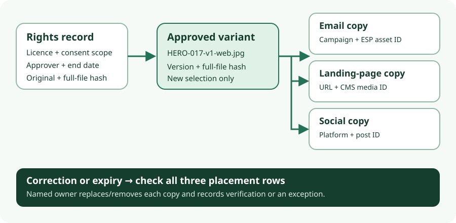

ResourceSpace 11.0 · one-image DAM decision · research 13 Oct 2026 · source-only
Does one campaign image need a DAM?
For one approved image used in email, a landing page and a social post, start with a restricted folder, a versioned asset register and a three-placement ledger. A named rights approver checks the signed creator licence and any model consent against each planned use. Evaluate a DAM when asset volume, users and access rules justify operating it. This is a decision heuristic, not a measured cost comparison or legal clearance.

The minimum record for one image
For a fictional HERO-017, store the unmodified original in a restricted folder with its signed creator agreement and any model consent. Record a full-file SHA-256 for the original and separately for the approved HERO-017-v1-web.jpg. The register identifies the permission evidence, permitted channels, territory, term/end date, required attribution, approver, decision time and selected variant. Any missing or ambiguous term is a hold for the rights owner, not permission inferred from a filename or field.
| Placement row | Record before publishing | On correction, expiry or withdrawal |
|---|---|---|
| Campaign and ESP asset IDs, approved variant/checksum, publish time and owner. | Replace an unsent asset if possible. Record whether a sent email can be recalled; do not assume it can. | |
| Landing page | Page URL, CMS media ID, variant/checksum, publish time and owner. | Replace or remove the site media; verify the visible page and note caches or residual copies. |
| Social post | Platform, account, post ID, variant/checksum, publish time and owner. | Edit or remove where the platform permits; record the verified result or an exception. |
Keep a separate row for every external copy. For each row also retain the planned removal date, territory, last verification and action evidence. A corrected v2 needs a fresh rights-scope check, derivative hash and approval. Mark v1 unavailable for new selection, then work through all existing placement rows. A weekly and pre-expiry ledger review is a practical manual control, not an automated guarantee.
When a manifest or DAM earns its cost
| Route | Reason to use it | What stays human or external |
|---|---|---|
| Folder + register + ledger | One or a few assets and editors. Restrict evidence, name variants, hash files and set owner-reviewed reminders. | Rights interpretation, sign-off and every external removal. Assign backup owners and test restoring records. |
| Version-controlled manifest + small script | Repeated assets or placements with stable rules. Check required fields, dates, file existence, hashes and missing ledger rows in review. | Script cannot read a licence's legal scope or retract distributed copies. Maintain tests and a script owner. |
| Self-hosted ResourceSpace | Many assets/users make search, group access, linked evidence, logs and scheduled date controls useful enough to operate a database-backed app. | Still require rights approval and placement ledger. Operate the app, database, filestore, cron, plugins, monitoring, upgrades, backups and recovery. |
The 11.0 requirements include a web server, PHP 8.2–8.5 and MySQL 8+ or MariaDB 10.4+. The backup and restore guides cover the database, filestore, application/configuration and crucial keys; custom code and external infrastructure need separate treatment. This operating burden is material for one image. No deployment or restore was tested.
What ResourceSpace documentation supports
Status and access limit what DAM users can find or download; Active is not a rights opinion, and archiving does not recall external copies. Version logs and reverts help recover an internal record or upload, not a site's CMS asset, an ESP copy or a social post. Download reports show a DAM download, not a later publication destination. Keep the ledger.
The optional License Manager can link licence records and supporting files; the optional Consent Manager links consent records. A record or uploaded PDF is evidence to review, not a validity check. Limit access to sensitive signed documents. The checksum guide says file checksums require enabling; its documented default hash scope is the first 50k unless changed, and embedded metadata may alter a digest. For this small route, independently record full-file SHA-256 for original and derivative.
Expiry is the critical configuration test
Other mechanisms can change DAM state: License Manager and Consent Manager document optional expiry workflows; Action dates can move resources, restrict Open access, remove collections or delete resources when configured, and depend on a daily pages/tools/cron_copy_hitcount.php run. These are plugin, state, permission and scheduler choices to verify in an isolated instance. The vendor FAQ says resources move to Archived on expiry, which is broader than the expiry-field guide. A plugin-enabled installation could explain the difference, but that is an inference, not a tested reconciliation. Treat the bare field as warning-only until the exact configuration and scheduled run are demonstrated. Even a successful DAM archive leaves external copies to inspect.
Four distinct licence and permission boundaries
- ResourceSpace code: the repository root notice points to code licence terms covering redistribution notices, endorsement and trademark. They do not grant image-use rights.
- Components and plugins: third-party notices need component-level review on redistribution. License/Consent Manager are optional plugins; their exact included build was not pinned here.
- Hosted/support service: the vendor FAQ and pricing describe commercial support/cloud choices separately from a local code licence. No client file or signed form was sent to a hosted service for this research.
- Campaign image: the signed creator licence, model consent where applicable, and scoped internal approval determine allowed uses. A software or hosting licence does not clear the image.
Evidence status and next test
The vendor versions page listed ResourceSpace 11.0 dated 29 June 2026 at the 13 October check. The vendor points to an SVN release branch in its upgrade guide. No immutable 11.0 SVN revision or downloaded package was inspected; svn was unavailable locally. This report uses living vendor documentation and limited master licence notices, not verified behavior of a fixed 11.0 build. No install, expiry, notification, permission, replacement or restore test occurred. A later isolated test could pin a package/revision, use fictional asset and consent records, configure groups, plugins, cron and mail sink, and observe before/after expiry and replacement. It must still check external copies separately.